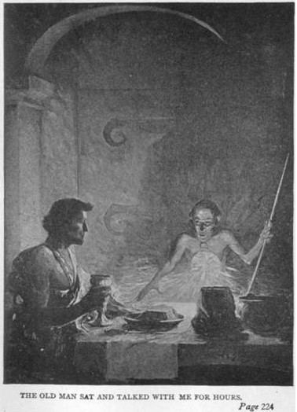

Tôi ở đó chờ Kantos Kan suốt hai ngày, nhưng vì không thấy anh tới, tôi lên đường theo hướng tây bắc về một điểm mà anh ta đã bảo rằng có một con kênh đào gần nhất. Thức ăn duy nhất của tôi bao gồm sữa thực vật từ những thân cây dồi dào thứ chất lỏng vô giá này.
Tôi lang thang suốt hai tuần, lê chân qua những đêm dài, với những vì sao dẫn lối, còn ban ngày thì nấp vào dưới một tảng đá lồi nào đó giữa những ngọn đồi mà tôi đi qua. Nhiều lần tôi bị những con thú hoang tấn công trong bóng tối, nên tôi luôn nắm chắc thanh kiếm trong tay, sẵn sàng chờ đón chúng. Thường thường, khả năng ngoại cảm mà tôi mới thủ đắc cảnh báo cho tôi trước, nhưng một lần nọ tôi bị đè xuống với những chiếc nanh kinh khủng kề vào cổ và một bộ mặt lông lá kề bên mặt trước khi tôi biết mình đang bị đe dọa.
Tôi không biết loài thú nào đang đè lên mình, nhưng tôi có thể cảm thấy rằng nó to lớn, nặng và có nhiều chân. Tay tôi chộp vào cổ nó trước khi những chiếc nanh cắm sâu vào cổ tôi, và chậm chạp, tôi đẩy bộ mặt lông lá ra khỏi người tôi, xiết chặt những ngón tay cứng như kềm của tôi lên khí quản của nó.
Chúng tôi nằm đó không một tiếng động. Con thú tấn công tôi với những chiếc nanh đáng sợ, và tôi cố duy trì gọng kềm của mình trong khi cố đẩy nó ra xa. Dần dần, đôi tay tôi yếu đi với cuộc chiến đấu không cân sức. Và từng phân một, đôi mắt đỏ rực và những chiếc nanh lấp loáng lại tiến đến sát mặt tôi, cho tới khi bộ mặt lông lá lại chạm vào mặt tôi lần nữa, tôi nhận ra tất cả đã chấm dứt. Ngay lúc đó, một thân hình to lớn lao ra từ bóng tối nhào lên con vật đang đè lên tôi. Cả hai lăn tròn, gầm gừ trên lớp thảm rêu, cắn xé nhau một cách dữ tợn, nhưng mọi chuyện nhanh chóng kết thúc và kẻ bảo vệ cho tôi đứng lên với cái đầu hạ thấp trên cổ của con vật suýt chút đã giết chết tôi.
Vầng trăng lớn, đột ngột nhô ra ở chân trời và soi sáng một vùng phong cảnh Barsoom, giúp tôi nhận ra kẻ cứu mạng mình là Woola, nhưng nó đến từ khi nào và làm cách nào để tìm ra tôi, tôi không biết. Không cần phải nói tôi vui mừng thế nào khi có nó làm bạn đường, nhưng niềm vui của tôi khi nhìn thấy nó bị khuấy động bởi mối lo âu về lý do nó rời khỏi Dejah Thoris. Tôi dám chắc chỉ có cái chết của nàng mới có thể lý giải cho việc nó rời khỏi nàng, vì tôi biết nó rất trung thành với mệnh lệnh của tôi.
Dưới ánh sáng rạng rỡ lúc này của hai vầng trăng, tôi thấy rằng nó chỉ còn là một cái bóng của thân hình nó trước đây, và khi nó quay lại để ngấu nghiến cái xác chết sau khi chào mừng tôi, tôi nhận ra anh bạn khốn khổ này đã hầu như gần chết vì đói. Bản thân tôi cũng chỉ khá hơn nó đôi chút nhưng tôi không thể ăn thịt sống và cũng không có phương tiện gì để đốt lửa. Khi Woola ăn xong, tôi tiếp tục cuộc du hành mệt mỏi và dường như vô tận để kiếm tìm con kênh đào.
Vào rạng sáng ngày thứ mười lăm trong chuyến hành trình, tôi vui mừng tột độ khi nhìn thấy những hàng cây cao báo hiệu cho đối tượng tìm kiếm của tôi. Vào khoảng giữa trưa tôi mệt nhọc lê chân tới cổng của một tòa nhà rộng lớn nằm trên một diện tích có lẽ đến bốn dặm vuông và cao tới trăm bộ. Không có một khe hở nào trên những bức tường dày ngoại trừ những cửa sổ bé xíu, cũng không có bất kỳ dấu hiệu nào của sự sống quanh đây.
Tôi không tìm thấy một cái chuông hay một công cụ nào đó để báo cho những người ở đây biết đến sự hiện diện của tôi, ngoại trừ một cái ống tròn nhỏ trên tường gần cửa ra vào. Nó chỉ to bằng một cây bút chì, và nghĩ rằng nó có thể là một phần của một cái ống nói, tôi kê miệng vào đó và gọi to. Rồi có một giọng nói phát ra từ đó, hỏi tôi là ai, từ đâu đến và mục đích là gì.
Tôi giải thích rằng tôi đã trốn thoát khỏi người Warhoon và đang sắp chết vì đói và kiệt sức.
“Anh đeo huy hiệu của chiến binh da xanh và có một con chó đi theo, thế nhưng anh lại có hình dáng của một người da đỏ. Về màu da anh không phải là xanh cũng không phải là đỏ. Nhân danh ngày thứ chín, anh là loại sinh vật nào vậy?”
“Tôi là một người bạn của người da đỏ Barsoom và tôi đang đói. Nhân danh nhân loại hãy mở cửa cho chúng tôi.” Tôi đáp.
Lúc đó cánh cửa trước mặt tôi bắt đầu lùi lại cho tới khi nó chìm vào bức tường cao mười lăm bộ, rồi nó trượt êm ái sang bên trái, để lộ ra một hành lang ngắn hẹp bằng bê tông. Ở đầu kia hành lang là một cánh cửa khác, giống hệt như cánh cửa mà tôi vừa bước qua. Tôi không thấy ai cả, nhưng ngay khi tôi và Woola bước qua cánh cửa thứ nhất, nó trượt trở lại vị trí cũ trên tường. Khi cánh cửa trượt sang bên, tôi nhận thấy nó rất dày, có thể tới hai mươi bộ. Khi cánh cửa trở về vị trí đóng, những ống thép hình trụ lớn hạ xuống từ trần nhà phía sau nó và lắp vào những lỗ tròn trên sàn nhà.
Cánh cửa thứ hai và thứ ba cũng lùi lại và trượt sang một bên như cánh cửa đầu, rồi tôi bước vào một gian phòng lớn. Ở đó tôi tìm thấy thức ăn và nước uống đặt trên một cái bàn lớn bằng đá. Một giọng nói bảo tôi hãy ăn no và cho con chó của tôi ăn, và trong lúc tôi đang ăn vị chủ nhân giấu mặt tiến hành một cuộc điều tra thăm dò nghiêm túc về tôi.
“Những lời của anh rất đáng chú ý,” người đó nói, khi kết luận về cuộc điều tra. “Nhưng hiển nhiên là anh đã nói thật, và cũng hiển nhiên là anh không phải là người ở Barsoom. Tôi có thể nói điều này vì cấu tạo não của anh và vị trí lạ lùng của các cơ quan nội tạng, cùng hình dáng và kích cỡ của quả tim.”
“Ông có thể nhìn xuyên qua tôi?” Tôi sửng sốt.
“Phải, tôi có thể nhìn thấy tất cả trừ các ý nghĩ của anh, và nếu anh là người Barsoom tôi cũng có thể đọc được chúng.”
Rồi một cánh cửa mở ra ở đầu kia của gian phòng và một ông già lạ lùng, khô đét, bé nhỏ tiến lại gần tôi. Ông ta chỉ khoác một loại vải hay trang sức gì đấy, một cái vòng cổ nhỏ bằng vàng treo một vật trang sức to bằng cái đĩa thức ăn nạm đầy những viên kim cương lớn, ngay chính giữa là một viên đá kỳ lạ, có đường kính chừng một insơ, lấp lánh chín tia sáng màu sắc khác nhau, bảy màu trên trái đất chúng ta và hai màu tuyệt đẹp khác mà với tôi rất mới lạ và không có tên gọi. Tôi không thể tả lại chúng giống như bạn không thể tả lại màu đỏ với một người mù. Tôi chỉ biết rằng chúng cực kỳ đẹp.
Ông già ngồi nói chuyện với tôi suốt mấy giờ. Điều lạ lùng nhất trong cuộc trao đổi giữa chúng tôi là tôi có thể đọc được mọi ý nghĩ của ông ta, trong khi ông ta không thể hiểu được một chút gì trong đầu tôi trừ phi tôi nói ra.
Tôi không để lộ khả năng của mình trong việc cảm nhận các hoạt động tinh thần của ông ta, do vậy tôi biết được nhiều điều mà sau này rất có giá trị đối với tôi. Tôi không hề biết rằng ông ta đã nghi ngờ năng lực kỳ lạ này của tôi, vì người sao Hỏa đã đạt tới độ kiểm soát các hoạt động tinh thần của họ hoàn hảo đến nỗi họ có thể chuyển giao trực tiếp các ý nghĩ của họ một cách tuyệt đối chính xác.
Tòa nhà này chứa một cỗ máy sản xuất ra bầu khí quyển nhân tạo để duy trì cuộc sống ở Hỏa tinh. Bí mật của toàn bộ quá trình này xoay quanh việc sử dụng tia sáng thứ chín, một trong những tia sáng đẹp đẽ mà tôi đã nhìn thấy phát ra từ viên đá lớn trên ngực người chủ nhân.
Tia sáng này được tách khỏi các tia quang phổ khác của mặt trời nhờ những thiết bị điều chỉnh tinh vi đặt trên mái của tòa nhà to lớn, ba phần tư trong số đó được dùng cho các bể chứa cất giữ tia sáng thứ chín. Quá trình sản xuất này được tiến hành nhờ cơ chế điện từ, hay nói đúng hơn là nó kết hợp với một tỷ lệ các dao động điện xác định, và kết quả được bơm vào năm trung tâm không khí chủ yếu của hành tinh, mà theo lời của người chủ nhân, được nối với bầu trời để chuyển hóa nó thành khí quyển.
Luôn luôn có đủ nguồn dự trữ tia sáng thứ chín trong tòa nhà lớn này để duy trì bầu khí quyển hiện tại của Hỏa tinh trong một ngàn năm. Điều đáng ngại duy nhất, như người bạn của tôi cho biết, là các thiết bị bơm có thể xảy ra sự cố.
Ông ta dẫn tôi tới một căn phòng bên trong. Ở đó tôi trông thấy một dãy hai mươi máy bơm chất phóng xạ, Mỗi máy đều ngang nhau về công suất cung cấp cho toàn sao Hỏa bầu khí quyển tổng hợp. Trong suốt tám trăm năm, ông ta bảo tôi, ông ta đã theo dõi những cái máy bơm này được luân phiên sử dụng mỗi ngày - khoảng hai mươi bốn giờ rưỡi giờ trên trái đất. Ông ta có một người trợ lý cùng theo dõi với ông. Mỗi năm Hỏa tinh - khoảng ba trăm bốn mươi bốn ngày trên trái đất của chúng ta, mỗi người trong số họ ở một mình trong cái nhà máy khổng lồ, hiu quạnh này.

Mỗi người sao Hỏa da đỏ đều được dạy bảo từ thời thơ ấu những nguyên tắc sản xuất ra bầu khí quyển, nhưng mỗi lần chỉ có hai người nắm giữ được những bí mật của việc điều hành nhà máy. Nó có những bức tường dày tới một trăm năm mươi bộ, tuyệt đối không thể tấn công được, và ngay cả mái nhà cũng được bảo vệ khỏi sự tấn công của tàu bay với một lớp kính che phủ dầy năm bộ.
Mối lo bị tấn công duy nhất của họ là từ những người Hỏa tinh da xanh hoặc vài người da đỏ điên cuồng, vì mọi người Hỏa tinh đều nhận thức được rằng mọi sự sống của Hỏa tinh đều tồn tại nhờ vào hoạt động liên tục của nhà máy này.
Tôi phát hiện ra một sự kiện quái lạ khi theo dõi những ý nghĩ của ông ta là những cánh cửa bên ngoài được vận hành bằng phương tiện ngoại cảm. Những cái chốt được điều chỉnh một cách tinh vi đến nỗi mấy cánh cửa được mở ra bởi sự kết hợp của những làn sóng ý nghĩ. Để thực nghiệm trò chơi mới phát hiện ra và muốn thử làm ông ta ngạc nhiên khi vén mở sự kết hợp đó, tôi làm ra vẻ tình cờ hỏi ông ta làm cách nào mở những cánh cửa nặng nề to lớn như thế, nhưng ông ta đáp nhanh rằng đó là một bí mật không thể tiết lộ được.
Ông già ngồi nói chuyện với tôi suốt mấy giờ.
Kể từ lúc đó, thái độ của ông ta đối với tôi thay đổi hẳn, như thể ông ta sợ rằng bí mật lớn của ông ta bị lộ ra, và tôi đọc được sự ngờ vực và sợ hãi trong vẻ mặt và các ý nghĩ của ông ta, dù lời nói của ông ta vẫn bình thường.
Trước khi tôi đi nghỉ đêm, ông ta hứa sẽ giao cho một lá thư gửi cho một quan chức nông nghiệp ở gần đó để giúp tôi tới Zodanga, thành phố gần nhất.
“Nhưng anh đừng để cho họ biết anh muốn tới Helium vì họ đang có chiến tranh với nước đó. Tôi và người trợ lý không có quê hương, chúng tôi thuộc về toàn thể Barsoom và tấm phù hiệu mà chúng tôi đeo bảo vệ cho chúng tôi ở mọi đất nước, ngay cả với người da xanh, dù chúng tôi không dám tin tưởng vào họ mấy.” Ông ta nói thêm.
“Thôi, chúc ngủ ngon, anh bạn. Chúc anh có một giấc ngủ dài và êm đềm, một giấc ngủ dài.”
Và dù ông ta mỉm cười vui vẻ, tôi nhìn thấy trong ý nghĩ của ông ta niềm ao ước giá mà ông ta đã không cho tôi vào, và hình ảnh ông ta đứng bên giường tôi trong bóng đêm, và một nhát dao đâm phập vào ngực tôi - “Tôi rất tiếc, nhưng tôi phải làm điều này vì lợi ích của Barsoom.”
Khi ông ta đóng cửa phòng, những ý nghĩ của ông ta cũng bị cắt rời khỏi tôi, một điều khá lạ lùng trong kiến thức ít oi của tôi về sự thần giao cách cảm.
Tôi phải làm gì? Làm sao tôi thoát ra khỏi những bức tường dày này? Tôi có thể giết ông ta một cách dễ dàng ngay lúc biết ý định của ông ta, nhưng khi ông ta chết, tôi cũng không thể trốn thoát, và khi nhà máy này ngưng hoạt động tôi cũng sẽ chết với tất cả các cư dân khác của hành tinh này. Tất cả, kể cả Dejah Thoris nếu nàng còn sống. Đối với những người khác tôi sẽ không bận tâm mấy, nhưng ý nghĩ về Dejah Thoris quét khỏi đầu tôi mọi mong muốn giết chết người chủ nhà lầm lẫn của tôi.
Tôi cẩn trọng mở cửa phòng, theo sau là Woola, đi tìm bí mật của những cánh cửa. Một kế hoạch điên cuồng nảy ra trong đầu tôi, tôi sẽ cố phá hỏng những cái chốt lớn bằng chín làn sóng ý nghĩ mà tôi đã đọc thấy trong đầu của người chủ nhân.
Len lén bò qua hành lang này tới hành lang khác và đi xuống cầu thang quanh quẹo, cuối cùng tôi tới được căn phòng lớn mà lúc sáng tôi đã thoả cơn đói dài ngày. Tôi không thấy ông già đâu cả, và cũng không biết ông ta ngủ đêm ở đâu.
Khi tôi sắp bước vào phòng, một tiếng động nhẹ ở phía sau khiến tôi lùi vào bóng tối của một góc khuất trong hành làng. Lôi Woola theo, tôi khom thấp người trong bóng tối.
Ngay lúc đó, ông già đi qua gần bên tôi. Khi ông ta đi vào căn phòng lờ mờ sáng mà khi nãy tôi sắp bước vào, tôi nhìn thấy ông ta cầm một con dao dài, mỏng và đang mài nó trên một phiến đá. Trong đầu ông ta là quyết định kiểm tra những cái máy bơm, mất khoảng nửa giờ, sau đó sẽ quay lại phòng ngủ của tôi và hạ sát tôi.
Khi ông ta đi qua căn phòng lớn và biến mất dưới cầu thang dẫn tới phòng đặt máy bơm, tôi len lén chuồn ra khỏi nơi ẩn nấp và đi tới cánh cửa lớn cuối cùng trong số ba cánh cửa ngăn cách tôi với tự do.
Tập trung tư tưởng vào cái khoá khổng lồ, tôi phóng chín làn sóng ý nghĩ thẳng vào nó. Tôi chờ đợi trong một khoảnh khắc nghẹt thở. Cuối cùng, cánh cửa khổng lồ chuyển động nhẹ nhàng về phía tôi và trượt sang một bên. Sau đó, hai cánh cửa còn lại cũng mở ra theo lệnh của tôi. Tôi và Woola lao vào bóng tối, tự do và không có gì khá hơn trước, ngoại trừ một điều là đã no bụng.
Vội vã thoát xa khỏi bóng tối của tòa nhà kinh khủng, tôi tới một ngã tư đầu tiên, hướng về con đường trung tâm càng nhanh càng tốt. Tôi tới đó vào rạng sáng và khi bước vào vòng rào thứ nhất tôi tìm kiếm những dấu vết của con người ở đó.
Những toà nhà thấp nằm rải rác, với những cánh cửa không thể vượt qua, và không có động tĩnh gì khi tôi đập và kêu cửa. Mỏi mệt và kiệt sức vì mất ngủ, tôi ném người xuống mặt đất và lệnh cho Woola đứng canh gác.
Một lúc sau, tôi thức giấc do tiếng gầm gừ sợ hãi của nó. Mở mắt ra, tôi nhìn thấy ba người da đỏ đang đứng cách chúng tôi một quãng ngắn với những khẩu súng.
“Tôi không có vũ khí và không phải là kẻ thù.” Tôi vội vã giải thích. “Tôi từng là tù nhân của người da xanh và đang đi tới Zodanga. Tất cả những gì tôi yêu cầu là thức ăn và sự nghỉ ngơi cho tôi và con chó và phương hướng để đi tới địa điểm tôi muốn.”
Họ hạ súng xuống và vui vẻ tiến tới gần tôi, đặt tay lên vai tôi, theo cung cách chào hỏi đúng tập tục, và hỏi tôi nhiều điều về bản thân tôi và hành trình của tôi. Rồi họ dẫn tôi tới nhà của một người trong bọn cách đó không xa.
Những ngôi nhà mà tôi đập cửa lúc sáng chỉ dùng để chứa hàng hóa và sản phẩm nông trại, còn nhà ở thì nằm giữa một khu rừng nhỏ với những thân cây khổng lồ, và giống như mọi ngôi nhà của người Hỏa tinh da đỏ, có thể cao lên vào ban đêm khoảng bốn mươi đến năm mươi bộ trên những cột tròn lớn bằng kim loại có thể trượt lên xuống trong một cái ống bọc chìm vào mặt đất, được vận hành bởi một cỗ máy phóng xạ bé xíu trong lối vào của tòa nhà. Thay vì bận tâm với việc làm tường rào, người Hỏa tinh da đỏ chỉ đơn giản nâng cao nó lên khỏi tầm nguy hiểm vào ban đêm. Họ cũng có những phương tiện riêng để hạ thấp hay nâng cao chúng khỏi mặt đất nếu muốn đi xa và bỏ nhà lại.
Hai anh em này, với vợ và con của họ, ở trong ba ngôi nhà tương tự trong nông trại này. Bản thân họ không làm nông mà là những quan chức nhà nước. Việc làm nông được thực hiện bởi những người tù thường phạm, tù nhân chiến tranh, người thiếu nợ không trả đúng hạn và những người chưa có gia đình quá nghèo không thể đóng nổi khoản thuế độc thân cao mà mọi nhà nước Hỏa tinh da đỏ đều áp dụng.
Họ là những con người thân thiện và phóng khoáng. Tôi sống ở đó với họ nhiều ngày, nghỉ ngơi và phục hồi sức khỏe sau những gian khổ lâu dài.
Khi họ nghe câu chuyện của tôi - tôi loại bỏ mọi chi tiết liên quan tới Dejah Thoris và ông già trong nhà máy khí quyển - họ khuyên tôi nên quét màu lên người để giống với dân tộc họ và sau đó cố tìm việc làm ở Zodanga, trong lục quân hoặc không quân.
“Cơ may để mọi người tin vào câu chuyện của anh rất ít, cho tới khi anh có thể chứng minh được sự chân thật của mình và kết bạn được với những người có địa vị cao trong triều đình. Anh có thể dễ dàng làm được điều này thông qua quân dịch, vì chúng tôi là một dân tộc hiếu chiến trên Barsoom, và dành những đặc quyền tốt nhất cho chiến sĩ.” Một người trong bọn nói.
Khi tôi sắp lên đường, họ tặng tôi một con ngựa nhỏ giống hệt như những con ngựa được người Hỏa tinh da xanh dùng để cưỡi. Nó có tầm vóc của một con ngựa bình thường nhưng có màu sắc và hình dáng giống hệt như những người anh em họ hoang dã khổng lồ và dữ tợn.
Những người bạn này cũng cho tôi một thứ dầu màu đỏ để quét lên toàn bộ thân thể và một người trong bọn cắt giùm tôi mái tóc đã mọc quá dài theo mốt thời thượng lúc bấy giờ, vuông ở phía sau và ngang trán ở phía trước, để tôi có thể đi tới bất cứ nơi nào trên Hỏa tinh như một người Hỏa tinh da đỏ chính thức. Tôi cũng thay cả các tấm huy hiệu và trang sức theo kiểu của một quý ông Zodanga có quan hệ với gia đình Ptor, họ tên của những người bạn tốt đó.
Họ bỏ đầy tiền Zodanga vào một cái túi nhỏ bên hông tôi. Sự trao đổi mua bán trên sao Hỏa cũng giống như của chúng ta ngoại trừ việc các đồng xu có hình bầu dục. Tiền giấy do các cá nhân phát hành khi cần tới và được chuộc lại hai lần mỗi năm. Nếu một người phát hành nhiều hơn số mà anh ta có thể chuộc, nhà nước trả đủ cho những người chủ nợ và người mắc nợ phải làm để trả hết nợ trong những nông trại hay hầm mỏ, tất cả đều thuộc về nhà nước. Điều này thích hợp cho tất cả mọi người ngoại trừ người mắc nợ vì khó mà đạt đủ số lao động tình nguyện để làm việc trong những nông trại quạnh quẽ rộng lớn của Hỏa tinh, trải dài như những dải băng cài tóc hẹp từ cực này đến cực kia, băng qua những miền đất mà dân cư là thú hoang và những con người còn hoang dã hơn.
Khi tôi đề cập tới việc tôi không có khả năng đền đáp lại lòng tốt của họ, họ bảo đảm với tôi rằng tôi sẽ có thừa cơ hội nếu tôi còn sống lâu trên Barsoom, và khi chào từ biệt tôi, họ dõi theo cho tới khi tôi khuất hẳn trên con đường trắng rộng lớn.